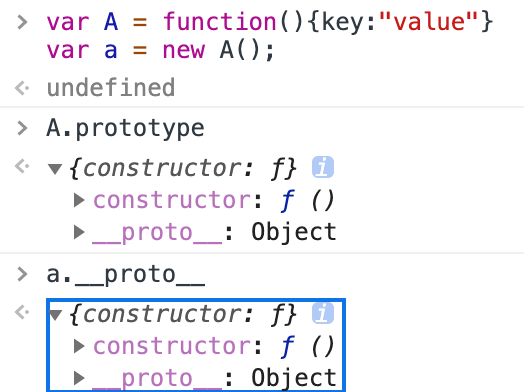
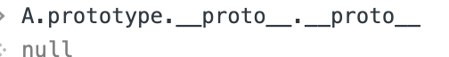
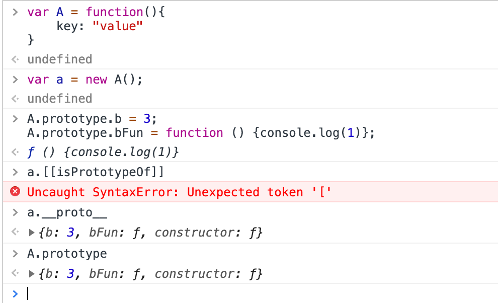

一. 闭包
就是一个函数，可以 访问并操作 其他函数内部变量的函数。
由于在Javascript语言中，只有函数内部的子函数才能读取局部变量，因此可以把闭包简单理解成”定义在一个函数内部的函数”。
所以，在本质上，闭包就是将函数内部和函数外部连接起来的一座桥梁。
实例
1 | function f1(){ |
二. 对象
JavaScript 中的所有事物都是对象：字符串、数字、数组、日期，等等。
在 JavaScript 中，对象是拥有属性和方法的数据。
实例
当您像这样声明一个 JavaScript 变量时：var txt = "Hello";
您实际上已经创建了一个 JavaScript 字符串对象。字符串对象拥有内建的属性 length。对于上面的字符串来说，length 的值是 5。字符串对象同时拥有若干个内建的方法。
属性：txt.length=5
方法：
1 | txt.indexOf() //返回某个指定的字符串值在字符串中首次出现的位置,如果要检索的字符串值没有出现，则该方法返回 -1 |
三. 原型 & 原型链
原型
是一个对象，其他对象可以通过它实现属性继承。
每一个构造函数都有一个原型，构造函数有一个prototype属性指向这个原型。原型链
由于proto是任何对象都有的属性。而 js 里面 万物皆对象，所以会形成一条 proto 连起来的链条。
访问proto 必须到头，并且值为 Null。实例
1
2
3
4
5
6//构造函数
var A = function(){
key: "value"
}
//创建一个实例, 就是使用这个new来将构造函数实例化
var a = new A();A.prototype == a.__proto__

在A函数的原型上定义属性和方法
1
2A.prototype.b = 3;
A.prototype.bFun = function () {console.log(1)};
四. BEM （一种 CSS 命名规则）
BEM的意思就是块（block）、元素（element）、修饰符（modifier），是由 Yandex 团队提出的一种前端命名方法论。
这种巧妙的命名方法让你的 CSS 类对其他开发者来说更加透明而且更有意义。
总结：BEM = block + element + modifier = 模块名 + 元素名 + 修改器
实例
1 | <div class="tabs category-tabs"> |
1 | <div class="contact-page"> |
五. 防抖节流 （属于性能优化的知识）
防抖：
防抖的含义就是如果短时间内大量触发同一事件，只会执行一次函数。
比如当你连续点击btn的时候只执行最后一次的事件。
应用场景：（最后一次）
1. 滚动条监听的例子，只有等用户停止滑动滚动条，才开始**监听浏览器滚动事件，返回当前滚条与顶部的距离**。
2. 页面resize事件，常见于需要做页面适配的时候。需要根据最终呈现的页面情况进行dom渲染（这种情形一般是使用防抖，因为只需要判断最后一次的变化情况）节流：
节流是：如果短时间内大量触发同一事件，那么在函数执行一次之后，该函数在指定的时间期限内不再工作，直至过了这段时间才重新生效。
比如某个用户闲着无聊，按住滚动条不断的拖来拖去。
应用场景：（只执行第一次，然后一段时间内不会执行）
1. 滚动条监听的例子，按住滚动条不断的拖来拖去，事件只执行第一次，然后一段时间内不会执行，直至过了这段时间再重新执行。
2. 搜索框input事件，例如要支持输入实时搜索可以使用节流方案（间隔一段时间就必须查询相关内容），或者实现输入间隔大于某个值（如500ms），就当做用户输入完成，然后开始搜索，具体使用哪种方案要看业务需求。例子:
// 避免窗口在变动时出现昂贵的计算开销。
jQuery(window).on(‘resize’, _.debounce(calculateLayout, 150));
// 避免在滚动时过分的更新定位
jQuery(window).on(‘scroll’, _.throttle(updatePosition, 100));
五. 回流重绘
回流必定会触发重绘，重绘不一定会触发回流。重绘的开销较小，回流的代价较高。
回流: 又叫重排（layout）。当元素的尺寸、结构或者触发某些属性时，浏览器会重新渲染页面，称为回流。此时，浏览器需要重新经过计算，计算后还需要重新页面布局，因此是较重的操作。
- 页面初次渲染
- 浏览器窗口大小改变
- 元素尺寸/位置/内容发生改变
- 元素字体大小变化
- 添加或者删除可见的 DOM 元素
- 激活 CSS 伪类（:hover……）
重绘: 当元素样式的改变不影响布局时，浏览器将使用重绘对元素进行更新，此时由于只需要 UI 层面的重新像素绘制，因此损耗较少。
- 改变元素颜色
- 改变元素背景色
六. ajax请求的五个步骤
创建XMLHttpRequest异步对象
var xhr = new XMLHttpRequest()设置回调函数
xhr.onreadystatechange = callback使用open方法与服务器建立连接 / 配置请求信息，open()
1
2
3
4
5
6// get 方式
xhr.open("get", "test.php", true)
// post 方式发送数据 需要设置请求头
xhr.open("post", "test.php", true)
xhr.setRequestHeader("Content-Type", "application/x-www-form-urlencoded")例如：
open（method，url，async)method url async GET 文件在服务器上的位置 true（异步） false（同步） POST 文件在服务器上的位置 true（异步） false（同步） 注意： 按照HTTP规范，该参数要大写；否则，某些浏览器(如Firefox)可能无法处理请求。 向服务器发送数据 / 发送请求
1
2
3
4
5// get 不需要传递参数
xhr.send(null)
// post 需要传递参数
xhr.send("name=jay&age=18")在回调函数中针对不同的响应状态进行处理 / 创建回调函数
1
2
3
4
5
6
7
8function callback() {
if(xhr.readyState == 4) { // 判断异步对象的状态
if(xhr.status == 200) { // 判断交互是否成功
var res = xhr.responseText // 获取服务器响应的数据
res = JSON.parse(res)// 解析数据
}
}
}服务器响应
readyState 表示Ajax请求的当前状态 0 代表未初始化。 还没有调用 open 方法 1 代表正在加载。 open 方法已被调用，但 send 方法还没有被调用 2 代表已加载完毕。send 已被调用。请求已经开始 3 代表交互中。服务器正在发送响应 4 代表完成。响应发送完毕 常用状态码 含义 200 一切正常(ok) 302 重定向 请求的资源临时分配了新url，本次请求暂且使用新url 403 禁止访问(forbidden) 404 没找到页面(not found) 500 内部服务器出错(internal service error)
完整代码：
1 | //第一步，创建XMLHttpRequest对象 |
七. http https 区别
- HTTP 明文传输，数据都是未加密的，安全性较差; HTTPS（SSL+HTTP） 数据传输过程是加密的，安全性较好。
- 使用 HTTPS 协议需要到 CA（Certificate Authority，数字证书认证机构） 申请证书，一般免费证书较少，因而需要一定费用。
- HTTP 页面响应速度比 HTTPS 快，主要是因为 HTTP 使用 TCP 三次握手建立连接，客户端和服务器需要交换 3 个包，而 HTTPS除了 TCP 的三个包，还要加上 ssl 握手需要的 9 个包，所以一共是 12 个包。
- 连接的端口不一样，http是80，https是443。
- HTTPS 其实就是建构在 SSL/TLS 之上的 HTTP 协议，所以，要比较 HTTPS 比 HTTP 要更耗费服务器资源。
补充:
HTTP是基于TCP/IP通信协议来传递数据的（HTML 文件, 图片文件, 查询结果等）。
注意：TCP/IP有个面向连接的特性！（意义：保证数据的完整性）
让咱们生动的了解一下TCP/IP通信协议中的三次握手四次挥手：
1 | 三次握手建立连接： |
八. call 和 apply 区别
apply：调用一个对象的一个方法，用另一个对象替换当前对象。
例如：B.apply(A, arr); 即A对象应用B对象的方法。call：调用一个对象的一个方法，用另一个对象替换当前对象。
例如：B.call(A, args1,args2); 即A对象调用B对象的方法。实例
1
2
3
4
5
6
7
8
9
10
11
12
13function add(a,b){
return a+b;
}
function sub(a,b){
return a-b;
}
var a1 = add.apply(sub,[4,2]); //sub调用add的方法
var a2 = sub.apply(add,[4,2]);
alert(a1); //6
alert(a2); //2
/*call的用法*/
var a1 = add.call(sub,4,2);
九. 类的继承
- apply, call 继承
1
2
3
4
5
6
7
8
9
10
11
12
13
14
15
16
17
18
19
20
21
22
23
24
25
26/*父类*/
function Parent(add,net,no,teacher) {
this.add = add;
this.net = net;
this.no = no;
this.teacher = teacher
}
/*子类*/
function Child(name,age,sex,id) {
this.name = name;
this.sex = sex;
this.age = age;
this.id = id;
Parent.call(this,"山东","www.baidu.com","1608","ccy"); //这个时候的Parent中的this已经被Child所代替
// Parent.apply(this,["山东","www.baidu.com","1608","ccy"]);
}
var child = new Child("fangMing","18","男","10086");
console.log(child)
//add: "山东"
// age: "18"
// id: "10086"
// name: "fangMing"
// net: "www.baidu.com"
// no: "1608"
// sex: "男"
// teacher: "ccy" - 利用prototype关键字
1
2
3
4
5
6
7
8
9
10
11
12
13
14function Person(){ }
Person.prototype.hello = "hello";
Person.prototype.sayHello = function(){
alert(this.hello);
}
function Child(){ }
Child.prototype = new Person();//这行的作用是：将Person中所有通过prototype追加的属性和方法都追加到Child，从而实现了继承
Child.prototype.world = "world";
Child.prototype.sayWorld = function(){
alert(this.world);
}
var c = new Child();
c.sayHello();
c.sayWorld();
十. 数组去重
- ES6 Set
1
2
3let arr = [12,43,23,43,68,12];
let item = [...new Set(arr)];
console.log(item);//[12, 43, 23, 68]
1 | let arr1 = [1,2,3,4,5]; |
- indexOf
1
2
3
4
5
6
7
8var arr = [1,2,2,2,2,3,4,4,45,5,3];
var newArr = [];
arr.forEach(function(item,index){
if (newArr.indexOf(item) <= 0){
newArr.push(item)
}
})
console.log(newArr) //[1, 2, 3, 4, 45, 5] - hasOwnProperty，是javascript中用于检测对象是否包含某个属性的方法，返回一个布尔值。
- Map
1
2
3
4
5
6
7
8
9
10
11
12
13
14
15let arr=[1,2,3,1,2,3,"a","a","b"];
function arrayNoRepeat(arr) {
let map = new Map();
let result = new Array(); // 数组用于返回结果
for (let i = 0; i < arr.length; i++) {
if(map.has(arr[i])) { // 判断 map 中是否已有该 key 值
map.set(arr[i], true); // 后面的true 代表该 key 值在原始数组中重复了，false反之
} else { // 如果 map 中没有该 key 值，添加
map.set(arr[i], false);
result.push(arr[i]);
}
}
return result;
}
console.log(arrayNoRepeat(arr));//[1, 2, 3, "a", "b"]
十一. forEach 和 map 区别
forEach是es3中推出的方法,
map是es5中推出的方法，目前在ie的低版本中都还有一些兼容性问题。
forEach： 不会返回执行结果，是 undefined，会改变原来数组。
Map: 会返回一个新的数组。
1 | var arr = ['a','b','c','d']; |
————————————————- 20200529 更新 ————————————————-
十二. 判断对象是否为空
1 | var a = {a: 1}; |
十三. 浏览器内核
主流浏览器有五大款，分别是IE、Firefox、Google Chrome、 Safari 、Opera。
| 序号 | 浏览器 | 内核 |
|---|---|---|
| 1 | IE | Trident内核，也是俗称的IE内核； |
| 2 | Firefox | Gecko内核，俗称Firefox内核； |
| 3 | Chrome | 统称为Chromium内核或Chrome内核，以前是Webkit内核，现在是Blink内核； |
| 4 | Safari | Webkit内核。 |
| 5 | Opera | 最初是自己的Presto内核，后来是Webkit，现在是Blink内核。 |
20230511 更新
1. Event Loop
众所周知，在使用javascript时，经常需要考虑程序中存在异步的情况，如果对异步考虑不周，很容易在开发中出现技术错误和业务错误。
作为一名合格的javascript使用者，了解异步的存在和运行机制十分重要且有必要；
那么，异步究竟是何方神圣呢？我们不得不提Event Loop.
Event Loop: 也叫做事件循环，是指浏览器或Node环境的一种解决javaScript单线程运行时不会阻塞的一种机制，也就是实现异步的原理。作为一种单线程语言，javascript本身是没有异步这一说法的，是由其宿主环境提供的.
2. JS 宏任务和微任务
js 是一种单线程语言，简单的说就是：只有一条通道，那么在任务多的情况下，就会出现拥挤的情况，这种情况下就产生了 ‘多线程’
但是这种“多线程”是通过单线程模仿的，也就是假的。那么就产生了同步任务和异步任务。
微任务：Promise.then、Object.observe、MutationObserver、process.nextTick(Node.js 环境)
宏任务：script、setTimeout、setInterval、postMessage、MessageChannel、setImmediate(Node.js 环境)
执行顺序：
(1) 先执行同步代码
(2) 遇到异步微任务则将异步微任务放入微任务队列中, 遇到异步宏任务则将异步宏任务放入宏任务队列中
(3) 当所有同步代码执行完毕后，再将异步微任务从队列中调入主线程执行，微任务执行完毕后再将异步宏任务从队列中调入主线程执行，一直循环直至所有任务执行完毕。
这里容易产生一个错误的认识：就是微任务先于宏任务执行。实际上是先执行同步任务然后在执行异步任务，异步任务是分微任务和宏任务两种的。
1 | setTimeout(function(){ |
1 | console.log(1) |
3. 预请求
TODO
4. 面向对象
（Object Oriented简称OO ：如C++，JAVA等语言）：看名字它是注重对象的。
当解决一个问题的时候，面向对象会把事物抽象成对象的概念，就是说这个问题里面有哪些对象，然后给对象赋一些属性和方法，然后让每个对象去执行自己的方法，问题得到解决。
5. 新特性
h5 新特性
1 | <input type="date"> |
css3新特性
1 | flex |
6. Nodejs 和 Javascript 区别
第一，JavaScript是一门编程语言（脚本语言），而Node.js是一个平台，可以简单理解为它是JavaScript的一种执行环境。
第二，JavaScript以前是在浏览器里执行的，需要浏览器里的JavaScript引擎，Firefox有叫做Spidermonkey的引擎，Safari有JavaScriptCore的引擎，Chrome有V8的引擎，
现在有人把Chrome有V8的引擎的引擎拿出来做了包装，加入了 内置基本模块（大多用JavaScript编写），就构成了Node.js。
第三，Node.js可以说是JavaScrip的一种独立于浏览器的运行环境。
V8 是 Chrome 浏览器中的 JavaScript 引擎，经过多年的发展和优化，性能和安全性都已经达到了相当的高度。
而 Node.js 则进一步将 V8 引擎加工成可以在任何操作系统中运行 JavaScript 的平台。
7. 函数式编程
函数式编程的影子：ES6 中加入了箭头函数，Redux 引入 Elm 思路降低 Flux 的复杂性，
React16.6 开始推出 React.memo()，使得 pure functional components 成为可能，16.8 开始主推 Hook，建议使用 pure function 进行组件编写……
函数式编程有两个核心概念:
数据不可变（无副作用）： 它要求你所有的数据都是不可变的，这意味着如果你想修改一个对象，那你应该创建一个新的对象用来修改，而不是修改已有的对象。
无状态： 主要是强调对于一个函数，不管你何时运行，它都应该像第一次运行一样，给定相同的输入，给出相同的输出，完全不依赖外部状态的变化。
8. HTTP状态码
1xx - 服务器收到请求。
2xx - 请求成功，如 200。
3xx - 重定向，如 302。
4xx - 客户端错误，如 404。
5xx - 服务端错误，如 500。
常见状态码:
200 - 成功。
301 - 永久重定向（配合 location，浏览器自动处理）。
302 - 临时重定向（配合 location，浏览器自动处理）。
304 - 资源未被修改。
400 -（错误请求） 服务器不理解请求的语法。
401 -（未授权） 请求要求身份验证。 对于需要登录的网页，服务器可能返回此响应。
403 -（禁止） 服务器拒绝请求。
404 - 资源未找到。
500 - 服务器错误。
502 -（错误网关） 服务器作为网关或代理，从上游服务器收到无效响应。
504 - 网关超时。
ref: https://www.cnblogs.com/kumufengchun/p/14917660.html